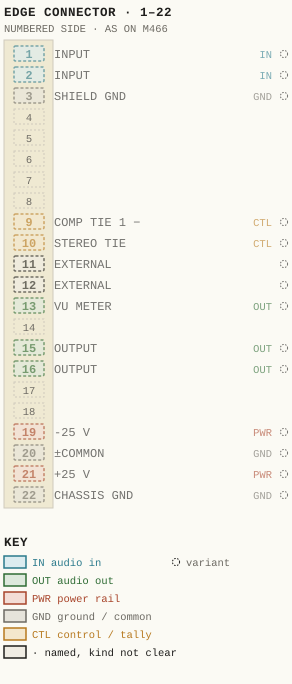
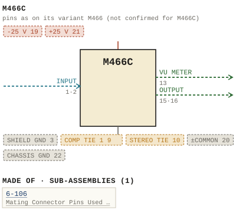

M466C
| Type | module |
| Category | DYNAMICS |
| Try it | simulator & front panel |
| Earliest dated evidence | 1976|9 — named in document |
| Evidence | named in 1976 - M466 - Compressor - Limiter.pdf |
| Confidence | low (named by) |
| All years found | 1976|9, 1977|10, 2005|38 |
| Variants | M466, M466M |
| Folder | DOCUMENTS/RECENT SCANS/WBSps.ca 20210317 - Small 11X17 drawings |
| Folder | Modules/DYNAMICS/M466C |
Connections
What it is made of and what it is part of.
Pictures


M466C.pinout.svg

M466C.connections.svg 1976 - DOC - WBSps.ca - 20210317 11X 17 Scans.png
1976 - DOC - WBSps.ca - 20210317 11X 17 Scans.png 1976 - M466C - compressor limiter 1.jpg
1976 - M466C - compressor limiter 1.jpg 1976 - M466C - compressor limiter 1_small.jpg
1976 - M466C - compressor limiter 1_small.jpg 1976 - M466C - compressor limiter 2.jpg
1976 - M466C - compressor limiter 2.jpg 1976 - M466C - compressor limiter 2_small.jpg
1976 - M466C - compressor limiter 2_small.jpg 1976 - M466C - compressor limiter 3.jpg
1976 - M466C - compressor limiter 3.jpg 1976 - M466C - compressor limiter 3_small.jpg
1976 - M466C - compressor limiter 3_small.jpg 1976 - M466C - lunchbox.jpg
1976 - M466C - lunchbox.jpg 1976 - M466C - lunchbox_small.jpg
1976 - M466C - lunchbox_small.jpg M466 - P45 - Functional Diagram.jpg
M466 - P45 - Functional Diagram.jpg 1976 - M466 - SLOPE COMP CONTROL FILTER FREQUENCY BUF STEREO TIE.jpg
1976 - M466 - SLOPE COMP CONTROL FILTER FREQUENCY BUF STEREO TIE.jpg 1977 - 466-01-001 - M466C LIMITER - COMPRESSOR MODULE FUNCTIONAL DIAGRAM - DRN DB - ENG RKB - ISS 2.jpg
1977 - 466-01-001 - M466C LIMITER - COMPRESSOR MODULE FUNCTIONAL DIAGRAM - DRN DB - ENG RKB - ISS 2.jpgPrice history
| Year | Kind | Price | Listed as | Effective | Source |
|---|---|---|---|---|---|
| 2005|38 | used market value | 300.00 | M466C Compressor/Limiter/De-esser | wbsps - website ARCHIVE/WBSPS 2008/ARCHIVE/old website/PriceGuide.htm | |
| 2006|39 | used market value | 300.00 | M466C Compressor/Limiter/De-esser | wbsps - website ARCHIVE/WBSPS 2008/ARCHIVE/jan 2006 shell/priceguide.htm |
Pinout & connections
No page of its own numbers M466C's contacts: these are its variant M466's, drawn faded — not confirmed for M466C.
pinout (SVG) · connections (SVG) · pins (JSON)
Pin evidence — 14 contacts
| Pin | Signal | Kind | Confidence | Read from | Source |
|---|---|---|---|---|---|
| 1 | INPUT | audio in | variant | table | 1976 - M466 - Compressor - Limiter (2).pdf, p. 50 |
| 2 | INPUT | audio in | variant | table | 1976 - M466 - Compressor - Limiter (2).pdf, p. 50 |
| 3 | SHIELD GND | ground / common | variant | table | 1976 - M466 - Compressor - Limiter (2).pdf, p. 50 |
| 9 | COMP TIE 1 | control / tally | variant | rto-144 | M466.rto144.json, p. 1 |
| 10 | STEREO TIE | control / tally | variant | table | 1976 - M466 - Compressor - Limiter (2).pdf, p. 50 |
| 11 | EXTERNAL | named, kind not clear | variant | table | 1976 - M466 - Compressor - Limiter (2).pdf, p. 50 |
| 12 | EXTERNAL | named, kind not clear | variant | table | 1976 - M466 - Compressor - Limiter (2).pdf, p. 50 |
| 13 | VU METER | audio out | variant | table | 1976 - M466 - Compressor - Limiter (2).pdf, p. 50 |
| 15 | OUTPUT | audio out | variant | table | 1976 - M466 - Compressor - Limiter (2).pdf, p. 50 |
| 16 | OUTPUT | audio out | variant | table | 1976 - M466 - Compressor - Limiter (2).pdf, p. 50 |
| 19 | -25 V | power rail | variant | table | 1976 - M466 - Compressor - Limiter (2).pdf, p. 50 |
| 20 | ±COMMON | ground / common | variant | table | 1976 - M466 - Compressor - Limiter (2).pdf, p. 50 |
| 21 | +25 V | power rail | variant | table | 1976 - M466 - Compressor - Limiter (2).pdf, p. 50 |
| 22 | CHASSIS GND | ground / common | variant | table | 1976 - M466 - Compressor - Limiter (2).pdf, p. 50 |
Dates found in the documents
| Year | Kind | Text | File |
|---|---|---|---|
| 1976|9 | title-block date | DATE JUNE 76 |
1976 - DOC - WBSps.ca - 20210317 11X 17 Scans.png |
| 1976|9 | title-block date | DATE JUNE 76 |
1976 - M466C - DOC - WBSps.ca - 20210317 11X 17 Scans.png |

Photos & scans (10)


Sub-assemblies & parts used (1)
| Item | What | Family | Year | How we know |
|---|---|---|---|---|
| 6-106 | Mating Connector Pins Used Are | Sub-assemblies (n-nnn) | 1976|9 | named in its manual |